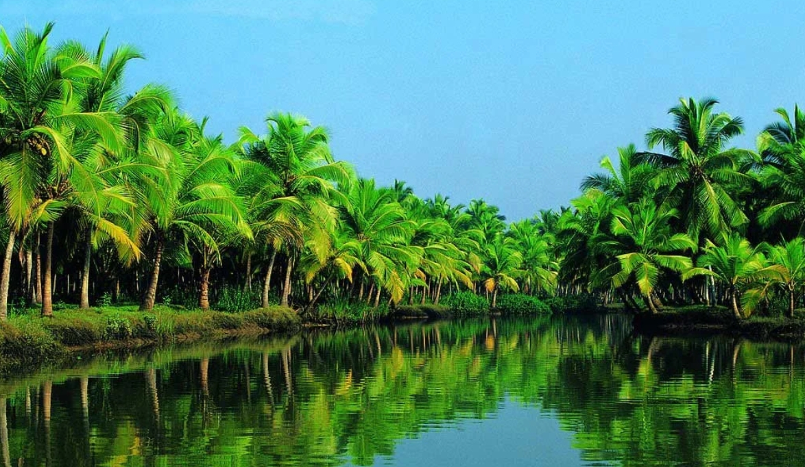

Dừa Bến Tre có lịch sử lâu đời, gắn liền với đời sống và văn hóa người dân địa phương. Nhờ điều kiện thổ nhưỡng và khí hậu thuận lợi, Bến Tre trở thành "thủ phủ dừa" của Việt Nam, với ngành công nghiệp chế biến dừa phát triển mạnh, góp phần quan trọng vào kinh tế và xuất khẩu.
Lịch sử và Phát triển
Nguồn gốc
Có nhiều giả thuyết về nguồn gốc của cây dừa ở Bến Tre. Một số cho rằng cây dừa được đưa vào Bến Tre bởi những người dân từ miền Trung, đặc biệt là tỉnh Bình Định, vốn nổi tiếng với dừa. Một giả thuyết khác lại cho rằng trái dừa có thể đã trôi dạt từ các nước láng giềng như Philippines, Indonesia đến bờ biển Bến Tre và nảy mầm.
Thời điểm hình thành
Dựa vào các tài liệu lịch sử, có thể khẳng định rằng cây dừa đã được trồng ở Bến Tre từ rất lâu, có thể từ khi người dân bắt đầu khai hoang, lập làng. Tuy nhiên, cây dừa được trồng nhiều nhất vào đầu thế kỷ 19, sau khi cuộc chiến giữa quân Tây Sơn và Nguyễn Ánh kết thúc. Lúc này, người dân tập trung vào việc ổn định cuộc sống và cây dừa trở thành một phần quan trọng trong đời sống của họ.
Vai trò đối với nền kinh tế Bến Tre

- Nguồn thu nhập ổn định cho nông dân: Cây dừa là nguồn thu nhập chính của nhiều hộ nông dân ở Bến Tre. Nhờ đặc tính ra quả quanh năm và không kén đất, cây dừa mang lại sự ổn định cho người nông dân, giúp giảm bớt tình trạng thiếu việc làm và tăng thu nhập cho các hộ gia đình.
- Phát triển ngành chế biến dừa: Bến Tre là trung tâm chế biến dừa lớn của Việt Nam, với hàng nghìn cơ sở sản xuất đa dạng sản phẩm như sữa dừa, dầu dừa, bột dừa, nước dừa đóng hộp. Không chỉ đáp ứng nhu cầu trong nước, các sản phẩm này còn được xuất khẩu rộng rãi, góp phần nâng cao giá trị dừa và thúc đẩy sự phát triển kinh tế địa phương.
- Tạo việc làm và phát triển cộng đồng: Ngành chế biến dừa đã tạo ra hàng nghìn công ăn việc làm cho người dân, không chỉ trong sản xuất mà còn ở các lĩnh vực liên quan như vận tải, bao bì và logistics, góp phần giảm thiếu hụt lao động nông thôn.
- Tăng trưởng xuất khẩu và đóng góp vào GDP: Sản phẩm dừa chiếm tỷ trọng lớn trong xuất khẩu của Bến Tre, vươn ra các thị trường khó tính như châu Âu, Mỹ, Trung Đông, góp phần thúc đẩy tăng trưởng kinh tế và nâng cao vị thế của tỉnh Bến Tre trên bản đồ xuất khẩu của Việt Nam.
- Ứng dụng trong phát triển nông nghiệp bền vững: Cây dừa có khả năng chịu đựng tốt trong các điều kiện khí hậu khắc nghiệt và không kén chọn đất đai, khiến nó trở thành một cây trồng lý tưởng trong bối cảnh biến đổi khí hậu và nước biển dâng cao. Việc trồng dừa cũng giúp giảm tác động xấu của hóa chất trong nông nghiệp, hỗ trợ phát triển nông nghiệp hữu cơ, từ đó giúp bảo vệ môi trường và nâng cao chất lượng sản phẩm.
Với tất cả những lợi thế này, cây dừa không chỉ là tài sản giá trị đối với nông dân mà còn là yếu tố quan trọng thúc đẩy nền kinh tế Bến Tre phát triển mạnh mẽ và bền vững trong tương lai.